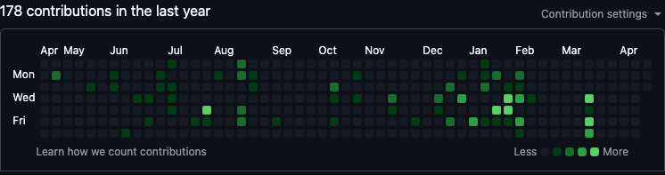

Speaker
Product Designer · Builder · Generalist
Ex-founding Product Designer at Last9
Build, don't just consume
1You set the depth — push back, ask, interrupt
2This is a discussion, not a monologue
3
"AI" isn't a
buzzword anymore.
It's the operating system
of new companies.
Design, yesterday
"Here's a problem.
Go solve it."
Design, today
"I need a solution.
By Friday.
Suggest a strategy."
Design is moving from problems-to-solve → solutions-to-have
Making "another version" used to take a week.
Now it takes a prompt.
So what's your value?
Taste. Judgment.
Systems thinking.
Design as a profession is being re-drawn in real time.
A new job title exists
Designer who codes. Engineer who designs.
Highest-leverage role in early-stage companies right now.
When you can build, you can show —
not just tell.
You stop being the "pixel polisher."
You start being the one
shaping direction.

Day 1
The Gap
"How the web actually works + first build"
Day 2
The Leverage
"Components, systems, AI-assisted building"
Day 3
The Shift
"Agentic design, showcase, what's next"
By Day 3 you'll have shipped something real.